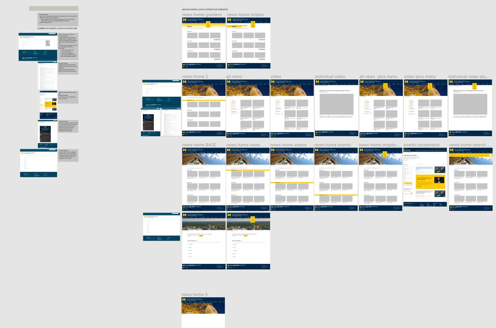
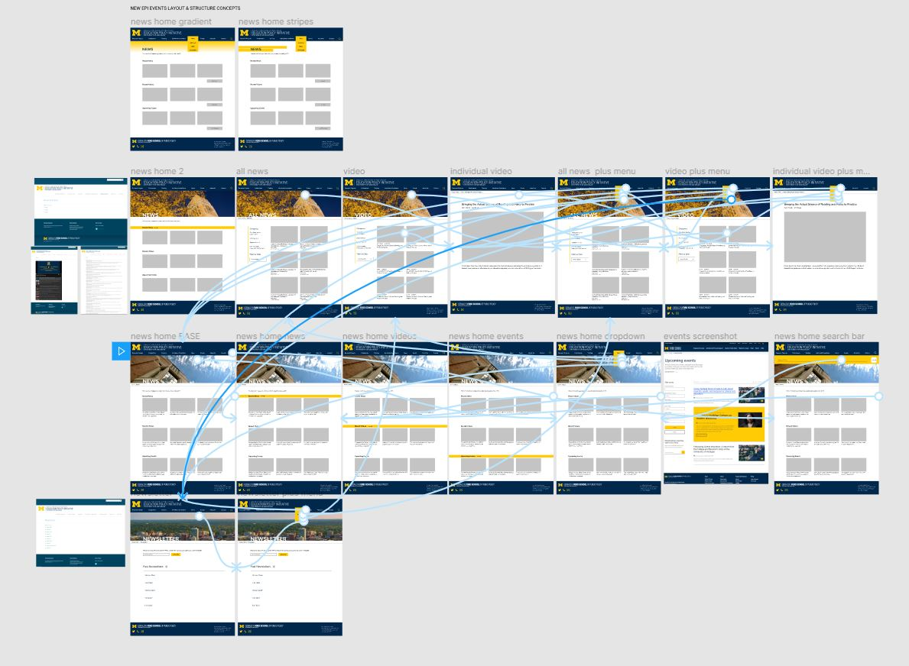

Education Policy Initiative Website Redesign
Role: UX Designer
Tools: Illustrator, Figma
Duration: January 2021 - July 2021
Summary
I joined the Education Policy Initiative as a Graphic Designer in January of 2020 as the research center was beginning the process of updating their web presence. I was asked to brainstorm ideas for an updated look that was similar to the Ford School of Public Policy, as this research center is a part of the larger school. I created a functional prototype of the news pages to share my vision for the updated layout and styling with my team.
Analytical Process
To begin reimagining this site, I dove deep into the current EPI website and made a list of every accessibility problem, confusing labeling or organizing, and not-so-user-friendly components I noticed. Some of the problems I noticed included:
1. Pages of the same type (e.g. Research Projects) had inconsistent formatting.
2. Some pages that should be linked in the main navigation are only accessible from other pages. Users will have to exert more effort to find specific
content.
3. The user experience is abysmal. All pages except for the homepage are text-heavy and hard to read. Headings and body are rarely differentiated, and landing pages are not engaging at all.
4. The organization of content is confusing.
Research projects and publications are housed on separate pages by topic, and there is no way to filter through media or view all of it in one library. This makes it hard for users to find specific content.
Design Process
Following my thorough analysis of EPI's website, I spent time understanding the brand identity and layouts of the Ford School of Public Policy's website. In speaking with my supervisor, I knew they were interested in a comprehensive landing page for News that featured events, news stories, and videos. My news landing page was inspired by that of the Ford School, but simplified to better meet the desires of leadership at EPI. I used Figma to create the redesigned prototype. I placed current screenshots of each page I would be redesigning in my project and made notes of each change I wanted to make. From there, I brainstormed styles for the navigation and main menu, and created each new page based on my final design choice.
Then, I created responsive effects and flow so that the prototype became functional for users.
